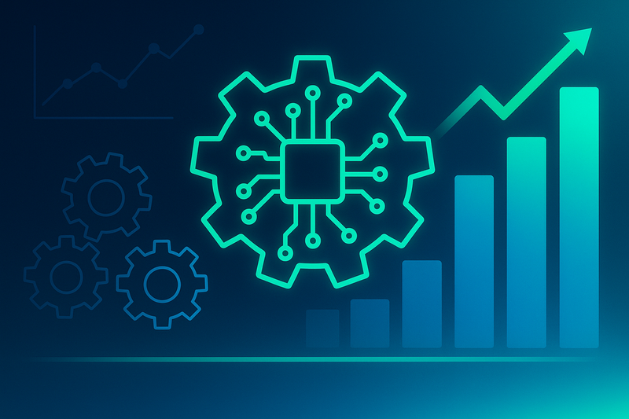

RPA vs AI Agents: What's the Difference and When to Use Each?
The landscape of automation is filled with acronyms that often sound interchangeable. Two common terms – Robotic Process Automation (RPA) and AI agents – describe very different approaches. If you’re uncertain which one fits your needs, you’re not alone. Clarity on their capabilities will help you choose the right tool and set realistic expectations for your automation journey.
RPA excels at executing well‑defined, rule‑based tasks. Think of it as a digital assembly line worker: it logs into systems, copies data from one field to another and follows predictable workflows. It doesn’t learn or adapt – its power comes from speed and consistency. AI agents, on the other hand, can interpret unstructured information, make decisions and handle variability. Powered by machine learning, they can understand language, classify emails, recommend actions and even carry on conversations.
Choosing between RPA and AI agents comes down to the nature of the task. For processes that never change and require no judgement (like copying invoice numbers into your ERP), RPA offers a quick win. When the process involves interpretation, uncertainty or communication – such as prioritising support tickets or analysing sentiment – AI agents are the better fit. In many modern solutions, both technologies are combined: RPA handles the repetitive actions while AI interprets data and triggers the right workflows.
Still unsure which automation route suits your business? We’ve helped companies blend RPA and AI agents to create seamless, intelligent systems. Book a free strategy call to discuss your processes and discover the ideal mix of RPA and AI.
Automation Steps & Logic
Below is a high-level overview of the steps involved in automating this process:
- Identify the Process: Map out the exact workflow that needs automation, including inputs, outputs and decision points.
- Select the Right Tools & Platforms: Choose AI agents, RPA bots or integration tools based on complexity and scalability needs.
- Design & Prototype: Build a proof of concept or prototype to validate the logic and gather stakeholder feedback.
- Implement & Integrate: Deploy the solution and integrate with existing systems, ensuring data flows seamlessly between components.
- Monitor & Optimise: Continuously track performance, gather insights and iterate on the automation to improve efficiency.
Recommended Bots & Agents
Here are examples of intelligent agents that can assist with this use case:
- Conversational AI Bots: Handle customer queries, onboarding or support through chat or voice interfaces.
- RPA Bots: Automate rule-based, repetitive tasks such as data entry, invoicing and report generation.
- Data Extraction Bots: Collect and cleanse information from documents, emails or web pages for downstream processing.
- Scheduling & Coordination Agents: Automate meeting bookings, reminders and coordination across teams.
- Integration Agents: Seamlessly connect your CRM, ERP, marketing and communication tools through APIs.